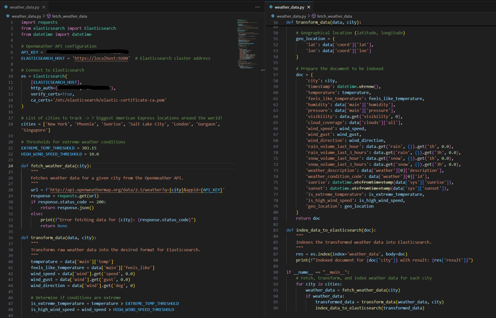

Real-Time Weather Data Ingestion and Visualization Using Python and ELK stack
Elasticsearch is an open-source, distributed search and analytics engine that allows for fast and scalable full-text search capabilities. Elasticsearch provides powerful indexing and searching capabilities and is often used for log and event data analysis, text search, and real-time analytics. Its architecture enables distributed data storage and processing, which makes it suitable for handling large-scale datasets across multiple nodes.
Elasticsearch supports RESTful APIs, making it straightforward to integrate with various data sources and programming languages. It uses JSON for storing documents, and its schema-free nature allows for flexible data modeling and quick indexing of complex data structures.
The ELK stack—which stands for Elasticsearch, Logstash, and Kibana—is a powerful trio that provides a comprehensive solution for data ingestion, processing, and visualization all which we touch on in this project.
- Elasticsearch serves as the backbone, providing the search and storage capabilities for ingested data.
- Logstash can be used for real-time data ingestion, filtering, and transformation before sending data to Elasticsearch.
- Kibana is the visualization layer that allows users to create dashboards, graphs, and charts based on the indexed data in Elasticsearch.
Together, these components provide a versatile, open-source solution for searching, logging, monitoring, and analyzing data. The stack is especially popular in use cases involving large datasets where real-time analysis and insights are required.
When compared to other databases and search engines, Elasticsearch stands out due to its unique set of features. Elasticsearch excels in speed, scalability, and full-text search capabilities, allowing for real-time analytics, flexible data modeling, and easy integration through its REST API. Its open-source nature and ecosystem of tools like Kibana and Logstash make it versatile for search and analytics tasks. However, it has drawbacks, including complex configuration, eventual consistency issues, resource-intensive operations, and limited support for complex transactional use cases compared to traditional relational databases. All of these critical components when choosing a backend for designing a new system.
Elasticsearch and it's related software components have slowly but surely made their way into the corporate world over the last decade. Companies like American Express, Google, and Intel utilize Elasticsearch for various reasons, ranging from log analysis and monitoring to real-time analytics and search. Here are some reasons why these corporations might choose Elasticsearch:
- Log and Event Data Analysis
- Large enterprises generate massive volumes of log data from different services and applications. Elasticsearch is well-suited for log aggregation, searching, and alerting.
- With Kibana dashboards, companies can visualize log data in real-time, helping teams identify issues quickly and reduce downtime.
- Fraud Detection and Anomaly Detection
- Companies like American Express may use Elasticsearch for real-time fraud detection, where data from credit card transactions is analyzed for suspicious activity.
- Elasticsearch’s anomaly detection capabilities make it easier to identify unusual patterns in large datasets.
- Monitoring and Observability
- Google or Intel may use Elasticsearch as part of their observability stack to monitor the health of their infrastructure. Tools like Metricbeat can collect and index metrics from different services, while Kibana can provide a single-pane-of-glass view of the infrastructure.
- Elasticsearch’s ability to handle diverse data sources makes it ideal for multi-cloud and hybrid cloud monitoring.
- Search-Based Applications
- For companies providing large-scale web services, Elasticsearch powers search engines and auto-complete features, allowing for personalized search experiences based on user behavior.
- Companies like Google, known for their search capabilities, can leverage Elasticsearch for internal search solutions or powering search features in their products.
- Real-Time Data Analytics
- Elasticsearch enables organizations to analyze data as it arrives, making it suitable for business intelligence, customer analytics, and operational monitoring.
- American Express, for example, could use Elasticsearch to analyze real-time financial transactions, improving customer experience and reducing fraud.
The combination of speed, scalability, full-text search capabilities, and a robust available ecosystem makes Elasticsearch an attractive choice for large corporations needing real-time data solutions. While it may not be suitable for every use case, it offers significant advantages in applications where search, logging, monitoring, and analytics are central.
The goal of this project was to create a real-time weather data ingestion system using an Elasticsearch cluster for data indexing, Logstash & Python for data ingestion, and Kibana for data visualization. By setting up a multi-node Elasticsearch cluster, configuring secure communication with TLS/SSL, and using Kibana for monitoring and visualization, I aimed to build a robust and scalable solution. This document is a detailed account of my journey for purpose of recording challenges faced, and serving as a pillar for future improvements and replication.
Project Prerequisites
To successfully complete this project, I needed to ensure I had the right hardware, software, and tools in place. Here’s a list of prerequisites I considered before diving in:
System Requirements
- Three separate VPS instances, each with the following specifications:
- 4 CPU cores
- 6 GB RAM
- 400 GB SSD storage
- Ubuntu 22.04 LTS as the operating system for all nodes.
- I purchased my instances from Contabo but any CSP will suffice.
Software Requirements
- Elasticsearch (v7.17.24) for the data storage and search engine.
- Kibana (v7.17.24) for visualizing the data.
- Python 3.x for writing the ingestion scripts.
- Metricbeat (v7.17.24) for monitoring the health of the cluster.
- Other tools installed included OpenSSL for certificate generation and curl for testing API endpoints.
- Installed Python libraries such as requests, elasticsearch, and schedule for fetching data, ingesting it into Elasticsearch, and automating the process.
- Basic knowledge of bash scripting was essential for setting up cron jobs, configuring services, and managing server settings.
Setting Up the Infrastructure
The first significant step was to set up the servers and ensure that they were ready to handle the components of my ELK stack.
Provisioning VPS Instances
VPS provisioning is fairly straightforward. Unlike a Kubernetes cluster, which requires passwordless ssh to communicate between nodes, an Elasticsearch cluster communicates over HTTP protocols keeping machine setup rather simple. Once the instances were provisioned, they were loaded with the base software requirements and made sure that all packages were up to date.
Installing Elasticsearch, Logstash, and Kibana
The next step was to install Elasticsearch and Kibana. First I chose to install manually from source provided, but after some complications I settled and decided to use apt for installation as it was a much more straightforward process and ensured that I received the latest stable versions. Another option you could use here would be Docker containers which simplifies the process even more, but I wanted to build without the extra layer of virtualization so that I could learn a little bit more about the technologies as I went along.
# Adding the Elasticsearch APT repository:wget -qO - https://artifacts.elastic.co/GPG-KEY-elasticsearch | sudo apt-key add -
sudo apt-add-repository "deb https://artifacts.elastic.co/packages/7.x/apt stable main"
# Installing Elasticsearch, Logstash, and Kibana
sudo apt install elasticsearch kibana logstash -y
I also ensured that Python was installed by default and set up a virtual environment for my project to avoid conflicts with system-wide libraries.
Configuring the Elasticsearch Cluster
With Elasticsearch installed, I needed to configure the cluster for a multi-node setup to ensure scalability and high availability.
Single-Node vs. Multi-Node Setup
Initially, I considered a single-node setup for simplicity, but given the project's goals, a multi-node configuration was more appropriate. A multi-node setup enhances availability, fault tolerance, and scalability. If I were to opt for a single-node it would remove many of the qualities that makes Elasticsearch such a great product.
Multi-Node Configuration Steps
I configured each node's elasticsearch.yml file with the following changes to enable discovery and clustering:
cluster.name: my-weather-clusternode.name: weather-node1
network.host: 0.0.0.0
discovery.seed_hosts: ["195.26.249.213", "209.145.52.134", "89.117.148.108"]
cluster.initial_master_nodes: ["weather-node1", "weather-node2", "weather-node3"]
I repeated similar configurations on the other nodes, changing the node.name for each instance. This configuration allows Elasticsearch to recognize all three nodes as part of the same cluster.
Configuring Software as a Service
To ensure the stack would start automatically on system reboot, it is important to set it up as a service on each VPS:
sudo systemctl enable elasticsearchsudo systemctl start elasticsearch
sudo systemctl enable logstash
sudo systemctl start logstash
sudo systemctl enable kibana
sudo systemctl start kibana
JVM Heap Size Tuning
Typically, elasticsearch will manage memory on the systems automatically based on the limits. However, given the limited memory on each VPS (6 GB), I wanted to be safe and tuned the JVM heap size to ensure Elasticsearch had enough memory without causing the system to swap:
# In jvm.options file-Xms3g
-Xmx3g
This configuration reserved 3 GB of RAM for the Elasticsearch process.
Enabling Security with TLS/SSL
To ensure secure communication across the Elasticsearch cluster, I set up TLS/SSL for all nodes. While I touch a little bit more on TLS/SSL, this part can be a little bit tricky and I would highly recommend following the Elasticsearch documentation for this part.
Generating Certificates
Using elasticsearch-certutil I generated a Certificate Authority (CA) and signed certificates for each node:
# Generate the CA/usr/share/elasticsearch/bin/elasticsearch-certutil ca
# Generate node certificates
/usr/share/elasticsearch/bin/elasticsearch-certutil cert --ca elastic-stack-ca.p12
Configuring SSL in Elasticsearch
After generating the certificates, I configured each node's elasticsearch.yml to enable SSL:
xpack.security.enabled: truexpack.security.transport.ssl.enabled: true
xpack.security.transport.ssl.verification_mode: certificate
xpack.security.transport.ssl.keystore.path: /etc/elasticsearch/elastic-certificates.p12
xpack.security.transport.ssl.truststore.path: /etc/elasticsearch/elastic-certificates.p12
Restarting the Elasticsearch services on all the nodes is necessary here for the changes to take effect.
Setting Up Kibana for Visualization
With Elasticsearch configured and running, I proceeded to install and configure Kibana.
Configuring Kibana for SSL
I enabled SSL in kibana.yml and set up the encryption key:
server.ssl.enabled: trueserver.ssl.certificate: /path/to/kibana.crt
server.ssl.key: /path/to/kibana.key
xpack.encryptedSavedObjects.encryptionKey: "a-very-secure-32-character-string"
This ensured that all communication between the browser and Kibana was encrypted.
Connecting Kibana to the Elasticsearch Cluster
elasticsearch.hosts: ["https://localhost:9200"]
elasticsearch.ssl.certificateAuthorities: ["/path/to/new-ca.pem"]
elasticsearch.username: "elastic"
elasticsearch.password: "your_elastic_password"
Verifying Kibana Functionality
I tested Kibana by accessing https://<server-ip>:5601 in the browser. Once I could see the login prompt, I knew the configuration was correct.
Writing the Python Script for Real-Time Weather Data Ingestion
With Elasticsearch and Kibana in place, the next step was setting up data ingestion. I created a Python script called weather_data.py to fetch real-time weather data from an external API. The script was designed to extract temperature, humidity, pressure, and coordinates, and then send the data to Elasticsearch.

Configuring Data Indexing and Mapping
When taking a look at the data I noticed that some of the data types had gotten imported incorrectly. Fortunately a quick mapping was able to rectify the situation
curl -X PUT "https://localhost:9200/weather_data" -H 'Content-Type: application/json' -d '{"mappings": {
"properties": {
"timestamp": { "type": "date" },
"temperature": { "type": "float" },
"humidity": { "type": "float" },
"geo_location": { "type": "geo_point" }
}
}
}'
Automating Data Ingestion Using Cron
I initially used cron to run the script every two minutes:
*/2 * * * * /usr/bin/python3 /home/node1/weather_data.py >> /var/log/cron_log.log 2>&1While cron worked well for basic automation, I decided to transition to Logstash to take advantage of its more powerful data ingestion capabilities. Once I finalized the script and data ingestion plan, I set up Logstash to replace cron for ingesting weather data into Elasticsearch.
Configuring and Using Logstash
After finalizing my script, I installed Logstash and configured it to handle the ingestion process. This allowed for more flexibility in data processing and made it easier to handle ingestion and for the future errors, transformations, and indexing as well.
-
Configuring Logstash: I created a Logstash configuration file to define the data ingestion pipeline. This file specified the input source (Python script output),
filters (if needed), and output destination (Elasticsearch).
# /etc/logstash/conf.d/weather_data.conf
input {
exec {
command => "python3 /home/node1/weather_data.py"
interval => 120
codec => "json"
}
}
output {
elasticsearch {
hosts => ["https://localhost:9200"]
index => "weather_data"
user => "elastic"
password => "your_elastic_password"
ssl => true
cacert => "/etc/elasticsearch/elastic-certificate-ca.pem"
}
}
This configuration runs the Python script every 120 seconds, ingests the JSON output, and sends it to the weather_data index in Elasticsearch.
-
Testing the Logstash Configuration: I tested the Logstash setup to ensure it could successfully ingest data:
sudo /usr/share/logstash/bin/logstash -f /etc/logstash/conf.d/weather_data.conf --config.test_and_exitIf there were no errors, I started the Logstash service
Once Logstash was successfully configured, I disabled the cron job to avoid duplicate data ingestion.
By switching to Logstash, I gained more control over the ingestion process, allowing me to apply transformations, error handling, and fine-tuned configuration for indexing data in Elasticsearch.
Finally with everything in place I was able to dive in to Kibana and taste what it had to offer in terms of visualizations. The dashboard I created had 5 different visualizations:
The Five Visualizations
- Average Temperature Over Time: This line chart shows the average temperature for each location over time, allowing for quick identification of trends or anomalies in temperature across different cities.
- Geographic Distribution of Weather Conditions: A map visualization that uses geo-location data to display the locations being tracked. Color-coded markers indicate the current weather conditions for each location.
- Humidity Levels Across Locations: A bar chart that compares the humidity levels across the different cities being monitored, helping to visualize areas with higher or lower humidity at a glance.
- Temperature Distribution Histogram: This histogram displays the distribution of temperature values recorded across all locations, highlighting the most common temperature ranges.
- Pressure Trends by Location: A line chart that shows changes in atmospheric pressure for each city over time, which can be useful for detecting weather pattern changes.
Challenges & Final Notations
This project presented several challenges. Primarily was just system configuration issues. A problem that i kept running into was insufficient permissions for the software to use keys or files because the environments were installed in the /etc directory. In the future to overcome this I would probably go for manual installation so that I would not have to work out of sudo so much. Another issue that I ran in to that was not particularly mentioned above was obtaining API data. I needed quick access to reliable data via an API and many companies were restricting their data. Lucky I did find the weather data through OpenWeather which was very simple to ingest data.
Overall the project was a rewarding experience that demonstrated the power of the ELK stack for real-time data processing and visualization. With the multi-node Elasticsearch cluster, secure TLS/SSL setup, and comprehensive data ingestion, I was able to build a scalable and robust system. If I were to do it again, these pieces of information that I collected on the way would enable me to do this almost twice as fast. There are plenty of ways to expand and improve the system further, including adding more data sources or integrating advanced machine learning features in Elasticsearch. In the future I plan on integrating more tools with the stack and using the power of Kibana to make more intriguing visualizations.